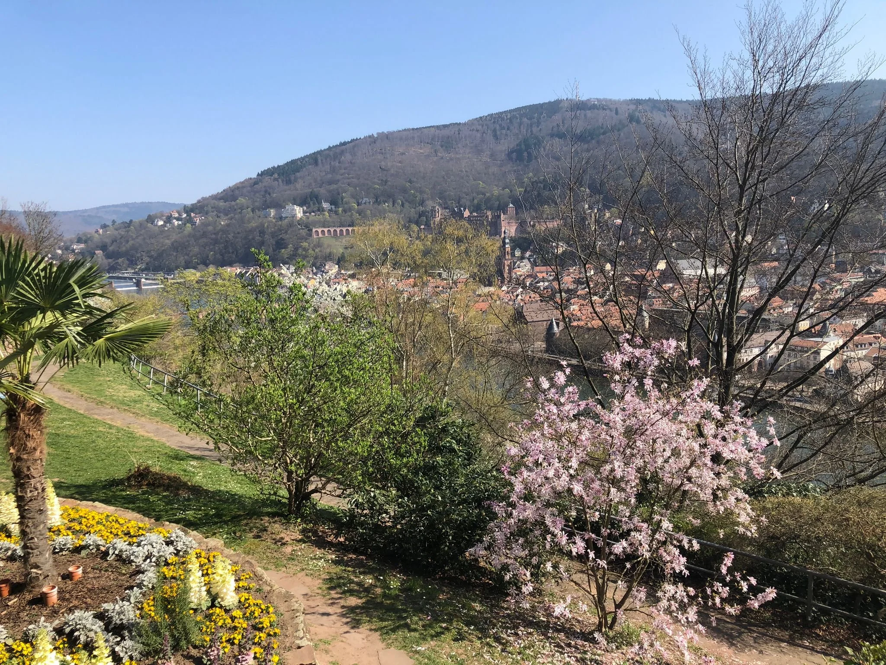
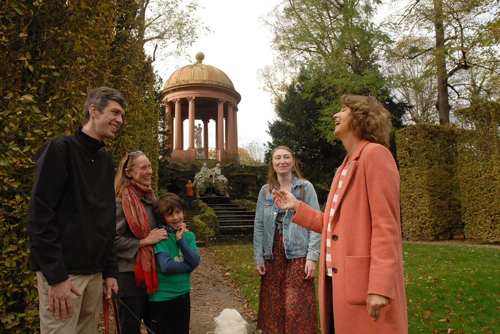
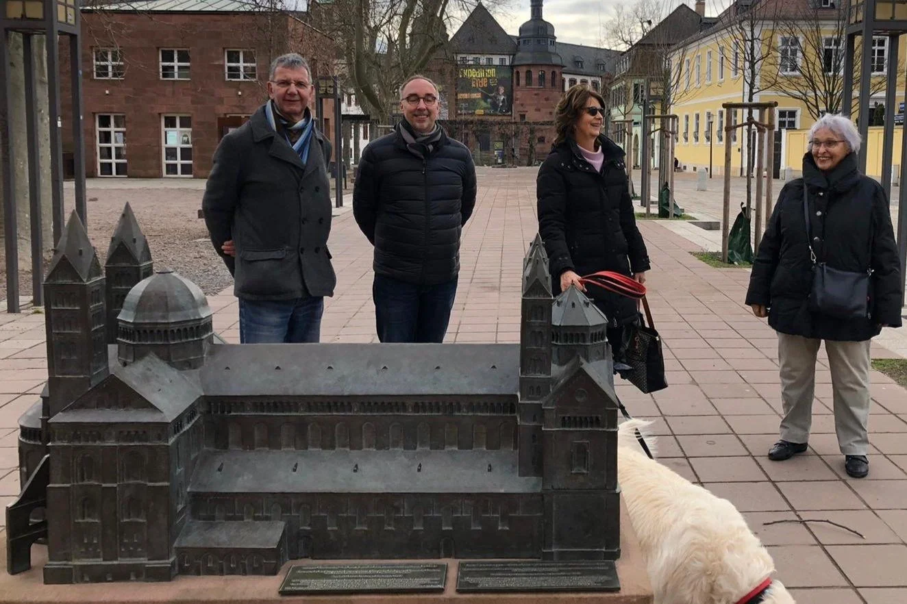

Möchten Sie die bewegte Geschichte der Kurpfalz und die kulturelle Vielfalt dieser Region hautnah erleben?
Unterhaltsam und kurzweilig nehmen wir Sie mit auf eine Erlebnistour, an die Sie sich gerne erinnern werden. Ob Sie viel oder wenig Zeit mitbringen: Wir passen unsere Touren gerne Ihren individuellen Wünschen und Interessen an.
Heidelberg

Für Schlossenthusiasten.
Das Heidelberger Schloss.
Wussten Sie, dass eine bezaubernde englische Prinzessin den repräsentativen Umbau des Heidelberger Schlosses anstieß – und wenig später eine deutsche Prinzessin seine Zerstörung nicht verhindern konnte? Seit über 300 Jahren zieht die Ruine Besucher in ihren Bann. Interessant und kurzweilig lassen wir die bewegte Vergangenheit dieser imposanten Anlage wieder aufleben.
Dauer: 90 Minuten
Preis: EUR 130 (Gruppe bis 15 Personen) plus Schlosshofeintritt
Jetzt anfragen
Für Altstadtliebhaber.
Die Heidelberger Altstadt.
Die Heidelberger Altstadt besitzt einen einzigartigen Charme. Schriftsteller wie Johann Wolfgang von Goethe, Mark Twain und Victor Hugo waren von ihrem besonderen Reiz fasziniert. Entdecken Sie das romantische Heidelberg mit seiner berühmten Schlossruine. Bei einem Rundgang durch die engen mittelalterlichen Gassen entführen wir Sie in eine längst vergangene Zeit.
Dauer: 90 Minuten
Preis: EUR 130 (Gruppe bis 15 Personen)
Jetzt anfragen
Für Romantiker.
Der Philosophenweg.
Der Philosophenweg zählt zu den schönsten Panoramawegen Deutschlands. Oben angekommen, werden Sie für den Aufstieg belohnt: Ein herrlicher Blick öffnet sich auf die malerische Altstadt und das Neckartal. Gemütlich schlendernd erfahren Sie Spannendes über die Geschichte der Stadt, die Universität, unglücklich verliebte Studenten und wilde Räubergesellen.
Dauer: 120 Minuten
Preis: EUR 140 (Gruppe bis 15 Personen)
Jetzt anfragenSchwetzingen

Für Gartenfreunde.
Der Schwetzinger Schlosspark.
Vom Garten der Allegorien bis zum Garten der Vernunft – lassen Sie sich in einen der besterhaltenen barocken Gärten des 18. Jahrhunderts entführen. Schwetzingen war Sommerresidenz der Kurfürsten der Pfalz und erlebte unter Carl Theodor seine Glanzzeit.
Dauer: 90 Minuten
Preis: EUR 130 (Gruppe bis 15 Personen)
Jetzt anfragen
Für Schlossfreunde – Teil II.
Das Schwetzinger Schloss.
Wasserburg, Jagdschloss, Sommerresidenz der Kurfürsten der Pfalz – das Schwetzinger Schloss in seiner wunderschönen Gartenumgebung. Sie erhalten Einblicke in das Alltagsleben des 18. Jahrhunderts unter Carl Theodor, dem Förderer von Wissenschaft und Musik und Anhänger der Aufklärung. Folgen Sie den Spuren berühmter Gäste wie Mozart und Voltaire.
Dauer: 60 Minuten
Preis: EUR 120 (Gruppe bis 15 Personen)
Jetzt anfragenMannheim

Für Barockliebhaber.
Das Mannheimer Barockschloss.
Nach der Zerstörung Heidelbergs wurde Mannheim zur bedeutenden Hauptresidenz und zum Musenhof der Kurfürsten der Pfalz – das zweitgrößte Barockschloss Europas, das heute teilweise die Universität Mannheim beherbergt. Lassen Sie sich von der Geschichte der Adoptivtochter Napoleons, Stephanie de Beauharnais, und von den prunkvoll möblierten Sälen verzaubern.
Dauer: 60 Minuten
Preis: EUR 120 (Gruppe bis 15 Personen)
Jetzt anfragenSpeyer

Für Domfreunde.
Der Speyerer Stadtspaziergang.
Speyer, einst herrschaftlicher Sitz deutscher Kaiser, liegt nahe der zweitgrößten Weinanbauregion Deutschlands. Erleben Sie den Kaiserdom (UNESCO-Weltkulturerbe), den mittelalterlichen Judenhof – als Teil der SchUM-Stätten ebenfalls UNESCO-Weltkulturerbe –, die barocke Dreifaltigkeitskirche und lebendige Promenaden mit Einblicken in die Pfälzer Kultur.
Dauer: 90 Minuten
Preis: EUR 130 (Gruppe bis 15 Personen)
Jetzt anfragenKostümführungen
Für Schauspielfreunde.
Bei unseren Kostümführungen plaudern Zeitzeugen über sich und das Jahrhundert, in das sie hineingeboren wurden. Zum Beispiel Nymphe de la Motte, die eingebildete Hofdame der Kurfürstin Sophie von Hannover – Lieblingstante Liselottes von der Pfalz –, oder Marie Luise von Lengefeldt, eine äußerst mitteilsame Gouvernante im Haushalt des berühmten Heidelberger Historikers und Universitätsprofessors Friedrich Christoph Schlosser.
Weitere Rollen auf Anfrage.
Dauer: 90 Minuten
Preis: EUR 170 (Gruppe bis 15 Personen)
Jetzt anfragen